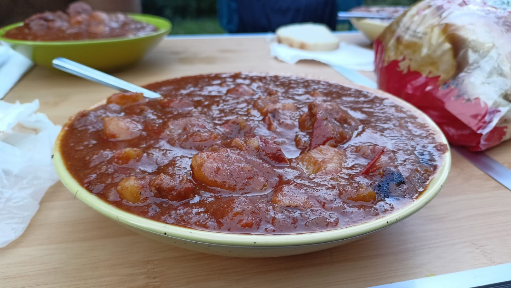

Guiaș

Ingredients:
- Potatoes
- Bell Pepper
- Hot Pepper
- Tomato Juice
- Tomato Paste from Concentrate
- Onions
- Salt
- Pepper
- Dafin Leaves
- Paprika
- Cooking oil/Lard (not too much)
- Pork Muscle
- Sausage
- Ceafa
Prepping:
- Wait until oil is bubbling, then add Onions
- After onions have browned a bit, add the peppers
- When the peppers have softened, add the meat
- Also add the tomato sauce and concentrate
- Next add a couple potatoes
- After 15-20 mins you can add some water, the condiments and the rest of the potatoes
- Wait until the desired consistency and serve